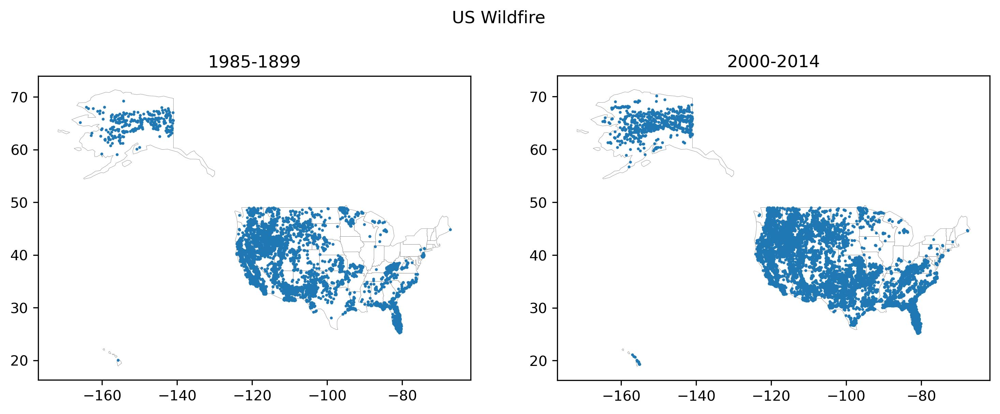

# Plot joined datasets to the states file
import geopandas as gpd
import fiona
wf1985 = gpd.read_file(r'/home/jovyan/Data/Wildfires_1985-1999/wildfires_1985-1999.shp')
states = gpd.read_file(r"/home/jovyan/Data/110m_cultural/ne_110m_admin_1_states_provinces.shp")
wf1985 = gpd.read_file(r'/home/jovyan/Data/Wildfires_1985-1999/wildfires_1985-1999.shp')
wf1985 = wf1985.to_crs(states.crs)
s1985 = wf1985.overlay(states, how= 'intersection')
wf2020 = gpd.read_file(r'/home/jovyan/Data/Wildifres_2020/wildfires_2000-2014.shp')
wf2020 = wf2020.to_crs(states.crs)
s2020 = wf2020.overlay(states, how= 'intersection')
#Plot these two datasets as maps.
import matplotlib.pyplot as plt
fig, (ax1, ax2) = plt.subplots(1, 2, figsize=(12, 6))
base = states.plot(ax=ax1,color='white', edgecolor='grey', linewidth=0.2)
base = states.plot(ax=ax2, color='white', edgecolor='grey', linewidth=0.2)
ax1.set(title='1985-1899')
ax2.set(title='2000-2014')
fig.suptitle('US Wildfire' , y =.85)
s1985.plot(ax=ax1, markersize=1)
s2020.plot(ax=ax2, markersize=1)
REFLECTION
At first, I attempted to merge the states and wildfire files together by finding a common column with an
identification code. When I thought I had suceeded in merging the datasets I notticed that there were only 51
rows, this felt off as there should've been over 100 to count for all the fires and not just the states. Then I
tried a different approach of using one of the set operations overlay; intersection. I was able to combine all
of the datasets together to further the project. The begining step was where I struggled the most. Once I was
able to get past that hurdle the rest of the analyis became a breathe of fresh air. However, I did encounter
another challenge later on, this one was a short one. The counts were coming off as the same numbers for both
the 1985-1999 and 2020-12014 dataset. I knew this was incorrect because the ladder's dataset should have
contained more wildfires.I realized then, that when I coded the counting line, I had used the same dataset for
both.
# Choroplething data
states1985 = states.merge(c1985.reset_index(name='number_of_fires'))
states2000 = states.merge(c2020.reset_index(name='number_of_fires'))
fig, (ax1, ax2) = plt.subplots(1, 2, figsize=(12, 6))
base = states.plot(ax=ax1,color='white', edgecolor='grey', linewidth=0.2)
base = states.plot(ax=ax2, color='white', edgecolor='grey', linewidth=0.2)
states1985.plot(
column='number_of_fires',
cmap='OrRd',
legend=True,
ax=ax1
)
ax1.set_title('1985-1999')
ax1.set_axis_off()
states2000.plot(
column='number_of_fires',
cmap='OrRd',
legend=True,
ax=ax2
)
ax2.set_title('2000-2014')
ax2.set_axis_off()
fig.suptitle('US Wildfire Counts per State', fontsize=14)
plt.tight_layout()
plt.show()

RECLECTION 2
Please keep note of the difference in scale bar. Despite the difference, Florida appears to expereince the most
wild fires in both time range of 1985-1999 and 2000-1999. The map on the right, 2000-2014, has a wide range in
wild fire counts. If we analyze the data closely, we can see that Florida is an outlier, containing 3274
wildfires. The following state with the most wild fires is Texas, conissting of 841 cases. This is a durastic
difference. A calculation is provided bellow to maintain data accuracy. Similarly for the 1985-1999 data set. # List wildfire counts for each state for each time period
c1985 = s1985.groupby('name').size()
c1985.sort_values(axis=0, ascending=False)
c2020 = s2020.groupby('name').size()
c2020.sort_values(axis=0, ascending=False)

# Upper bound of wildefire 2000-2014 dataset
q1 = states2000['number_of_fires'].quantile(0.25)
q3 = states2000['number_of_fires'].quantile(0.75)
iqr = q3 - q1
upper_bound = q3 + 1.5 * iqr
print("Upper bound:", upper_bound)
# [Upper bound: 955.375] # Upper bound of wildefire 1985-1999 dataset
q1 = states1985['number_of_fires'].quantile(0.25)
q3 = states1985['number_of_fires'].quantile(0.75)
iqr = q3 - q1
upper_bound = q3 + 1.5 * iqr
print("Upper bound:", upper_bound)
# [Upper bound: 476.25]